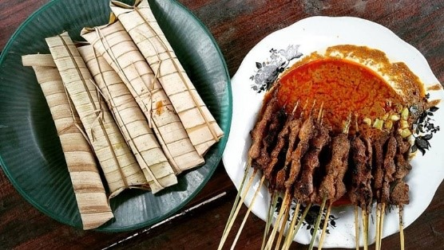

Sate Bulayak

Bahan - Bahan
- 350 gr daging sapi, tumbuk kasar, potong kecil
- 2 bungkus SASA Santan Bubuk 23 gr
- 280 ml air
- 100 gr kelapa setengah tua, parut kasar
- 150 gr kacang tanah goreng, tumbuk halus
- 1 sdm air jeruk nipis
- 1 sdm gula merah, serut
- 10 buah bulayak / lontong khas lombok
- tusuk sate secukupnya
- 1 sdt SASA Penyedap Rasa
Bumbu Halus
- 6 siung bawang merah
- 4 siung bawang putih
- 15 buah cabe rawit
- 1/4 sdt merica sangrai
- garam secukupnya
cara Membuat
- Siram daging dengan air jeruk nipis lalu diamkan selama ±15 menit.
- Ambil setengahnya bumbu halus dan campurkan dengan daging.
- Tambahkan SASA Penyedap Rasa beserta kelapa parut. Aduk merata.
- Tusuk daging dengan tusuk sate, kukus selama ±20 menit atau sampai matang. Lalu bakar sate di atas bara api sampai berwarna kecokelatan.
- Sambal kacang: Tumis sisa bumbu halus dengan 3 sendok makan minyak goreng panas sampai tercium harum, tambahkan Penyedap Rasa Sasa
- Masukkan air, SASA Santan Bubuk, kacang tanah, dan gula merah lalu aduk merata. Masak sampai mendidih dan kental.